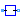
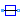
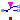
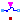
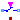
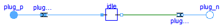
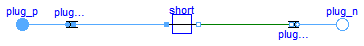
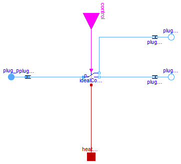
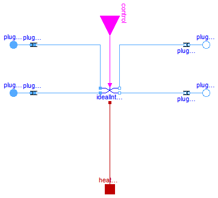
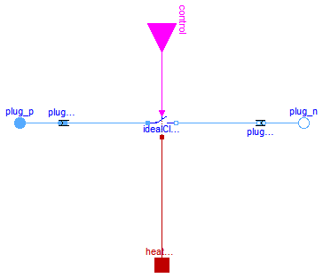

This package hosts ideal models for quasi stationary multiphase circuits. Quasi stationary theory can be found in the references.
Extends from Modelica.Icons.Package (Icon for standard packages).
| Name | Description |
|---|---|
|  Idle | Idle branch |
|  Short | Short cut branch |
|  IdealCommutingSwitch | Multiphase ideal commuting switch |
| Multiphase ideal intermediate switch | |
|  IdealOpeningSwitch | Multiphase ideal opener |
|  IdealClosingSwitch | Multiphase ideal closer |
 Modelica.Electrical.QuasiStationary.MultiPhase.Ideal.Idle
Modelica.Electrical.QuasiStationary.MultiPhase.Ideal.Idle
This model describes m simple idle branches considering the complex currents i = 0; it uses m single phase idle branches.
Extends from Interfaces.TwoPlug (Two plugs with pin-adapter).
| Type | Name | Default | Description |
|---|---|---|---|
| Integer | m | 3 | Number of phases |
| Type | Name | Description |
|---|---|---|
| PositivePlug | plug_p | |
| NegativePlug | plug_n |
model Idle "Idle branch" extends Interfaces.TwoPlug;QuasiStationary.SinglePhase.Ideal.Idle idle[ m]; equationconnect(plugToPins_p.pin_p, idle.pin_p); connect(idle.pin_n, plugToPins_n.pin_n); end Idle;

This model describes m simple short branches considering the complex voltages v = 0; it uses m single phase short branches.
Extends from Interfaces.TwoPlug (Two plugs with pin-adapter).
| Type | Name | Default | Description |
|---|---|---|---|
| Integer | m | 3 | Number of phases |
| Type | Name | Description |
|---|---|---|
| PositivePlug | plug_p | |
| NegativePlug | plug_n |
model Short "Short cut branch" extends Interfaces.TwoPlug;QuasiStationary.SinglePhase.Ideal.Short short[ m]; equationconnect(plugToPins_p.pin_p, short.pin_p); connect(short.pin_n, plugToPins_n.pin_n); end Short;

Contains m singlephase ideal commuting switches (Modelica.Electrical.QuasiStationary.SinglePhase.Ideal.IdealCommutingSwitch).
Use with care: This switch is only intended to be used for structural changes, not fast switching sequences, due to the quasistationary formulation.
Extends from Modelica.Electrical.MultiPhase.Interfaces.ConditionalHeatPort (Partial model to include conditional HeatPorts in order to describe the power loss via a thermal network).
| Type | Name | Default | Description |
|---|---|---|---|
| Integer | m | 3 | Number of phases |
| Resistance | Ron[m] | Closed switch resistance [Ohm] | |
| Conductance | Goff[m] | Opened switch conductance [S] | |
| Integer | mh | m | Number of heatPorts=number of phases |
| Boolean | useHeatPort | false | =true, if all HeatPorts are enabled |
| Temperature | T[mh] | fill(293.15, m) | Fixed device temperatures if useHeatPort = false [K] |
| Type | Name | Description |
|---|---|---|
| HeatPort_a | heatPort[mh] | |
| input BooleanInput | control[m] | true => p--n2 connected, false => p--n1 connected |
| PositivePlug | plug_p | |
| NegativePlug | plug_n2 | |
| NegativePlug | plug_n1 |
model IdealCommutingSwitch "Multiphase ideal commuting switch"
parameter Integer m(final min=1) = 3 "Number of phases";
parameter Modelica.SIunits.Resistance Ron[m](final min=zeros(m), start = fill(1.E-5, m))
"Closed switch resistance";
parameter Modelica.SIunits.Conductance Goff[m](final min=zeros(m), start = fill(1.E-5, m))
"Opened switch conductance";
extends Modelica.Electrical.MultiPhase.Interfaces.ConditionalHeatPort(final mh=m, final T=fill(293.15,m));
Modelica.Blocks.Interfaces.BooleanInput control[m]
"true => p--n2 connected, false => p--n1 connected";
Modelica.Electrical.QuasiStationary.MultiPhase.Interfaces.PositivePlug plug_p(final m=m);
Modelica.Electrical.QuasiStationary.MultiPhase.Interfaces.NegativePlug plug_n2(final m=m);
Modelica.Electrical.QuasiStationary.MultiPhase.Interfaces.NegativePlug plug_n1(final m=m);
Modelica.Electrical.QuasiStationary.SinglePhase.Ideal.IdealCommutingSwitch
idealCommutingSwitch[ m](
final Ron=Ron,
final Goff=Goff,
each final useHeatPort=useHeatPort);
Modelica.Electrical.QuasiStationary.MultiPhase.Basic.PlugToPins_p
plugToPins_p(final m=m);
Modelica.Electrical.QuasiStationary.MultiPhase.Basic.PlugToPins_n plugToPins_n1(final m=m);
Modelica.Electrical.QuasiStationary.MultiPhase.Basic.PlugToPins_n plugToPins_n2(final m=m);
equation
connect(control, idealCommutingSwitch.control);
connect(idealCommutingSwitch.heatPort, heatPort);
connect(plugToPins_n1.plug_n, plug_n1);
connect(plugToPins_n2.plug_n, plug_n2);
connect(plugToPins_n2.pin_n, idealCommutingSwitch.n2);
connect(idealCommutingSwitch.n1, plugToPins_n1.pin_n);
connect(plugToPins_p.plug_p, plug_p);
connect(idealCommutingSwitch.p, plugToPins_p.pin_p);
end IdealCommutingSwitch;

Contains m ideal intermediate switches (Modelica.Electrical.QuasiStationary.SinglePhase.Ideal.IdealIntermediateSwitch).
Use with care: This switch is only intended to be used for structural changes, not fast switching sequences, due to the quasistationary formulation.Extends from Modelica.Electrical.MultiPhase.Interfaces.ConditionalHeatPort (Partial model to include conditional HeatPorts in order to describe the power loss via a thermal network).
| Type | Name | Default | Description |
|---|---|---|---|
| Integer | m | 3 | Number of phases |
| Resistance | Ron[m] | Closed switch resistance [Ohm] | |
| Conductance | Goff[m] | Opened switch conductance [S] | |
| Integer | mh | m | Number of heatPorts=number of phases |
| Boolean | useHeatPort | false | =true, if all HeatPorts are enabled |
| Temperature | T[mh] | fill(293.15, m) | Fixed device temperatures if useHeatPort = false [K] |
| Type | Name | Description |
|---|---|---|
| HeatPort_a | heatPort[mh] | |
| input BooleanInput | control[m] | true => p1--n2, p2--n1 connected, otherwise p1--n1, p2--n2 connected |
| PositivePlug | plug_p1 | |
| PositivePlug | plug_p2 | |
| NegativePlug | plug_n2 | |
| NegativePlug | plug_n1 |
model IdealIntermediateSwitch "Multiphase ideal intermediate switch"
parameter Integer m(final min=1) = 3 "Number of phases";
parameter Modelica.SIunits.Resistance Ron[m](final min=zeros(m), start = fill(1.E-5, m))
"Closed switch resistance";
parameter Modelica.SIunits.Conductance Goff[m](final min=zeros(m), start = fill(1.E-5, m))
"Opened switch conductance";
extends Modelica.Electrical.MultiPhase.Interfaces.ConditionalHeatPort(final mh=m, final T=fill(293.15,m));
Modelica.Blocks.Interfaces.BooleanInput control[m]
"true => p1--n2, p2--n1 connected, otherwise p1--n1, p2--n2 connected";
Modelica.Electrical.QuasiStationary.MultiPhase.Interfaces.PositivePlug plug_p1(final m=m);
Modelica.Electrical.QuasiStationary.MultiPhase.Interfaces.PositivePlug plug_p2(final m=m);
Modelica.Electrical.QuasiStationary.MultiPhase.Interfaces.NegativePlug plug_n2(final m=m);
Modelica.Electrical.QuasiStationary.MultiPhase.Interfaces.NegativePlug plug_n1(final m=m);
Modelica.Electrical.QuasiStationary.SinglePhase.Ideal.IdealIntermediateSwitch
idealIntermediateSwitch[m](
final Ron=Ron,
final Goff=Goff,
each final useHeatPort=useHeatPort);
Modelica.Electrical.QuasiStationary.MultiPhase.Basic.PlugToPins_p plugToPins_p1(final m=m);
Modelica.Electrical.QuasiStationary.MultiPhase.Basic.PlugToPins_n plugToPins_n1(final m=m);
Modelica.Electrical.QuasiStationary.MultiPhase.Basic.PlugToPins_p plugToPins_p2(final m=m);
Modelica.Electrical.QuasiStationary.MultiPhase.Basic.PlugToPins_n plugToPins_n2(final m=m);
equation
connect(control, idealIntermediateSwitch.control);
connect(idealIntermediateSwitch.heatPort, heatPort);
connect(plug_p1, plugToPins_p1.plug_p);
connect(plug_p2, plugToPins_p2.plug_p);
connect(plugToPins_n1.plug_n, plug_n1);
connect(plugToPins_n2.plug_n, plug_n2);
connect(idealIntermediateSwitch.p2, plugToPins_p2.pin_p);
connect(idealIntermediateSwitch.n2, plugToPins_n2.pin_n);
connect(idealIntermediateSwitch.n1, plugToPins_n1.pin_n);
connect(idealIntermediateSwitch.p1, plugToPins_p1.pin_p);
end IdealIntermediateSwitch;
Contains m ideal opening switches (Modelica.Electrical.QuasiStationary.SinglePhase.Ideal.IdealOpeningSwitch).
Use with care: This switch is only intended to be used for structural changes, not fast switching sequences, due to the quasistationary formulation.Extends from Modelica.Electrical.QuasiStationary.MultiPhase.Interfaces.TwoPlug (Two plugs with pin-adapter), Modelica.Electrical.MultiPhase.Interfaces.ConditionalHeatPort (Partial model to include conditional HeatPorts in order to describe the power loss via a thermal network).
| Type | Name | Default | Description |
|---|---|---|---|
| Integer | m | 3 | Number of phases |
| Resistance | Ron[m] | Closed switch resistance [Ohm] | |
| Conductance | Goff[m] | Opened switch conductance [S] | |
| Integer | mh | m | Number of heatPorts=number of phases |
| Boolean | useHeatPort | false | =true, if all HeatPorts are enabled |
| Temperature | T[mh] | fill(293.15, m) | Fixed device temperatures if useHeatPort = false [K] |
| Type | Name | Description |
|---|---|---|
| PositivePlug | plug_p | |
| NegativePlug | plug_n | |
| HeatPort_a | heatPort[mh] | |
| input BooleanInput | control[m] | true => switch open, false => p--n connected |
model IdealOpeningSwitch "Multiphase ideal opener"
extends Modelica.Electrical.QuasiStationary.MultiPhase.Interfaces.TwoPlug;
parameter Modelica.SIunits.Resistance Ron[m](final min=zeros(m), start = fill(1.E-5, m))
"Closed switch resistance";
parameter Modelica.SIunits.Conductance Goff[m](final min=zeros(m), start = fill(1.E-5, m))
"Opened switch conductance";
extends Modelica.Electrical.MultiPhase.Interfaces.ConditionalHeatPort(final mh=m, final T=fill(293.15,m));
Modelica.Blocks.Interfaces.BooleanInput control[m]
"true => switch open, false => p--n connected";
Modelica.Electrical.QuasiStationary.SinglePhase.Ideal.IdealOpeningSwitch
idealOpeningSwitch[m](
final Ron=Ron,
final Goff=Goff,
each final useHeatPort=useHeatPort);
equation
connect(control, idealOpeningSwitch.control);
connect(idealOpeningSwitch.heatPort, heatPort);
connect(idealOpeningSwitch.pin_n, plugToPins_n.pin_n);
connect(plugToPins_p.pin_p, idealOpeningSwitch.pin_p);
end IdealOpeningSwitch;

Contains m ideal closing switches (Modelica.Electrical.QuasiStationary.SinglePhase.Ideal.IdealClosingSwitch).
Use with care: This switch is only intended to be used for structural changes, not fast switching sequences, due to the quasistationary formulation.Extends from Modelica.Electrical.QuasiStationary.MultiPhase.Interfaces.TwoPlug (Two plugs with pin-adapter), Modelica.Electrical.MultiPhase.Interfaces.ConditionalHeatPort (Partial model to include conditional HeatPorts in order to describe the power loss via a thermal network).
| Type | Name | Default | Description |
|---|---|---|---|
| Integer | m | 3 | Number of phases |
| Resistance | Ron[m] | Closed switch resistance [Ohm] | |
| Conductance | Goff[m] | Opened switch conductance [S] | |
| Integer | mh | m | Number of heatPorts=number of phases |
| Boolean | useHeatPort | false | =true, if all HeatPorts are enabled |
| Temperature | T[mh] | fill(293.15, m) | Fixed device temperatures if useHeatPort = false [K] |
| Type | Name | Description |
|---|---|---|
| PositivePlug | plug_p | |
| NegativePlug | plug_n | |
| HeatPort_a | heatPort[mh] | |
| input BooleanInput | control[m] | true => p--n connected, false => switch open |
model IdealClosingSwitch "Multiphase ideal closer"
extends Modelica.Electrical.QuasiStationary.MultiPhase.Interfaces.TwoPlug;
parameter Modelica.SIunits.Resistance Ron[m](final min=zeros(m), start = fill(1.E-5, m))
"Closed switch resistance";
parameter Modelica.SIunits.Conductance Goff[m](final min=zeros(m), start = fill(1.E-5, m))
"Opened switch conductance";
extends Modelica.Electrical.MultiPhase.Interfaces.ConditionalHeatPort(final mh=m, final T=fill(293.15,m));
Modelica.Blocks.Interfaces.BooleanInput control[m]
"true => p--n connected, false => switch open";
Modelica.Electrical.QuasiStationary.SinglePhase.Ideal.IdealClosingSwitch
idealClosingSwitch[m](
final Ron=Ron,
final Goff=Goff,
each final useHeatPort=useHeatPort);
equation
connect(control, idealClosingSwitch.control);
connect(idealClosingSwitch.heatPort, heatPort);
connect(idealClosingSwitch.pin_p, plugToPins_p.pin_p);
connect(idealClosingSwitch.pin_n, plugToPins_n.pin_n);
end IdealClosingSwitch;